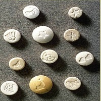

Origen
¿Cómo empezó?
El origen de las drogas se remonta a la Antigüedad, ligado al uso de plantas y sustancias naturales en rituales religiosos, medicinales y mágicos, evolucionando radicalmente en el siglo XIX con la síntesis química moderna.

¿Cómo empezó?
El origen de las drogas se remonta a la Antigüedad, ligado al uso de plantas y sustancias naturales en rituales religiosos, medicinales y mágicos, evolucionando radicalmente en el siglo XIX con la síntesis química moderna.
¿Qué hace que empiece?
El consumo y la adicción a las drogas no tienen una única causa, sino que se originan por una interacción compleja de factores genéticos, ambientales y psicológicos individuales. Las investigaciones médicas y sociológicas dividen estas causas en tres grandes categorías
¿Cómo salir?
La solución integral al problema de las drogas se divide en tres pilares esenciales: la prevención temprana, el tratamiento profesional de la adicción y el cambio de hábitos personales. La adicción es una enfermedad crónica tratable, por lo que abordar el problema requiere combinar estrategias comunitarias y médicas para lograr una recuperación definitiva.